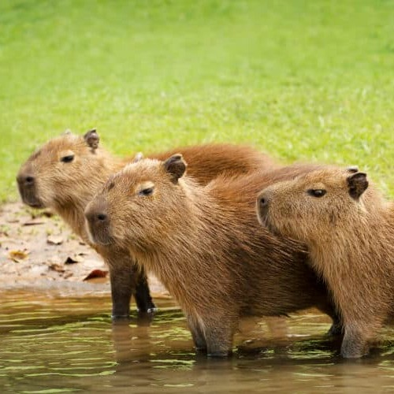
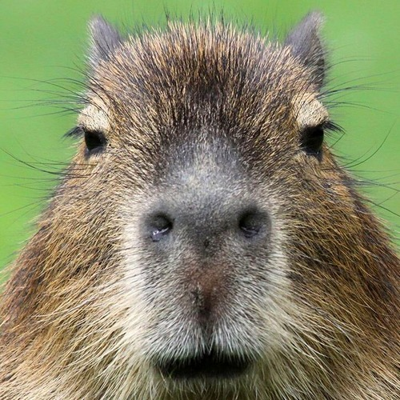
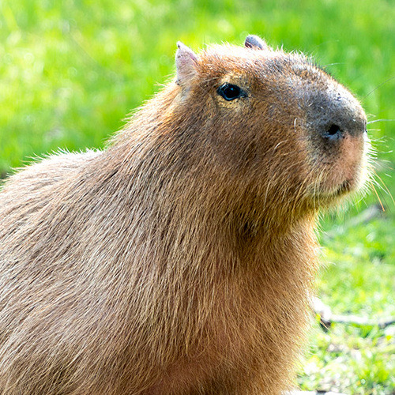
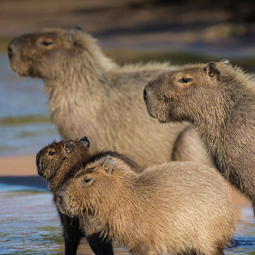
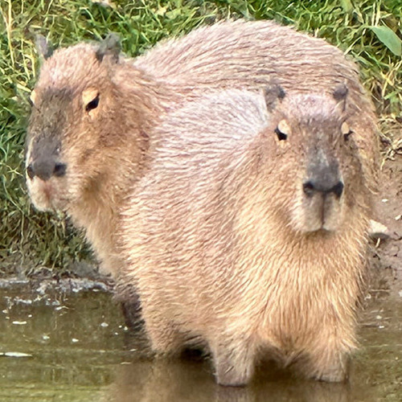
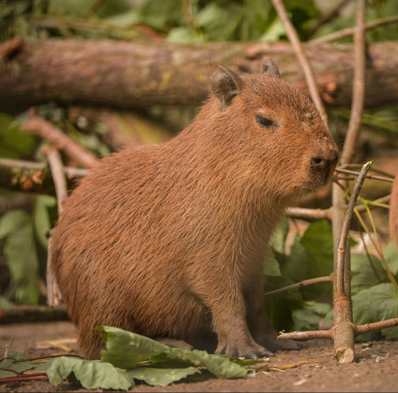
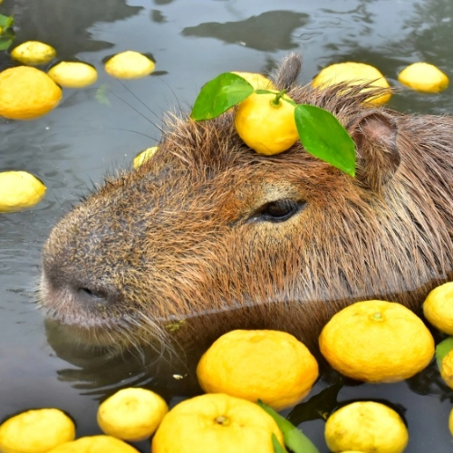
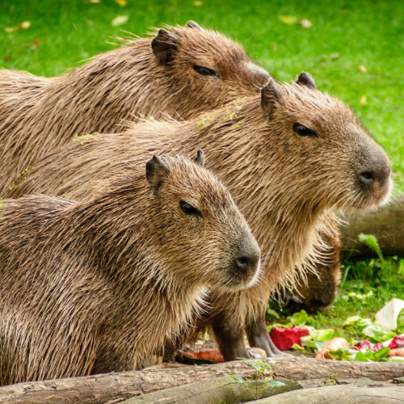
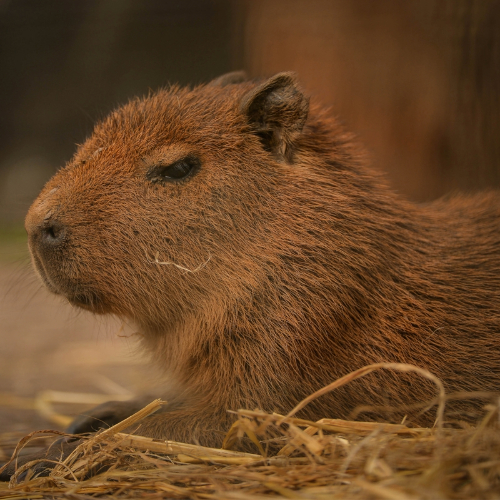
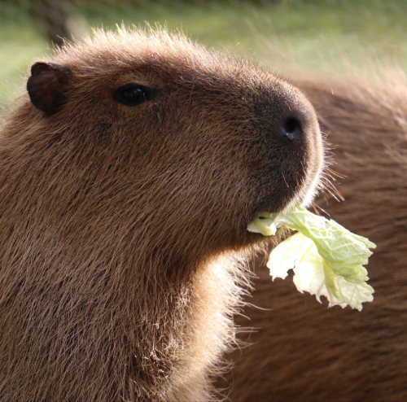

Stado młodych kapibar nad rzeką.

Kapibara patrząca wprost w obiektyw kamery.

Kapibara czekająca przy misce na jedzenie.

Rodzina kapibar z młodymi nad rzeką.

Dwie kapibary nad rzeką.

Młoda kapibara w lesie.

Kapibara pływająca wśród cytryn.

Trzy kapibary na łące.

Młoda kapibara leżąca na słomie.

Dorosła kapibara jedząca kapustę.